빌드가 짧아지자 병목이 앞뒤로 옮겨 갔어요
SDLC는 계획, 설계, 빌드, 테스트, 배포, 유지보수를 차례로 거친 뒤 다음 기능이나 버그를 들고 다시 계획으로 돌아오는 주기예요. 영상은 Anthropic이 Claude Academy에 올린 'The AI-Native SDLC Playbook'을 따라가요. 14개 레슨으로 된 이 과정에 Anthropic이 Claude Code로 앱을 만들 때 쓰는 주기가 담겨 있다는 게 발표자의 설명이에요.
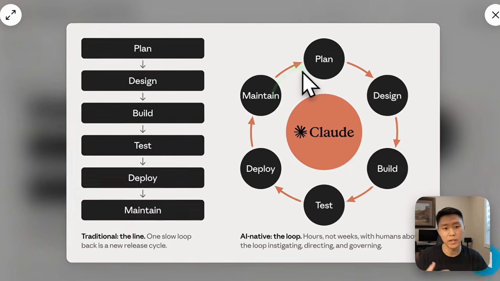
병목은 어디로 옮겨 갔을까요
에이전트 이전에는 모든 단계가 사람 속도로 움직였어요. 그중 가장 긴 게 빌드였죠. AI가 빌드를 크게 줄이자 주기 전체가 짧아졌어요.
그러자 빌드 앞뒤가 상대적으로 느린 구간이 됐어요. 요구사항을 모으는 일, AI가 쓴 코드를 리뷰하는 일, 만든 걸 릴리스하는 일이에요. 플레이북은 이 세 곳을 어떻게 다듬을지 다뤄요.
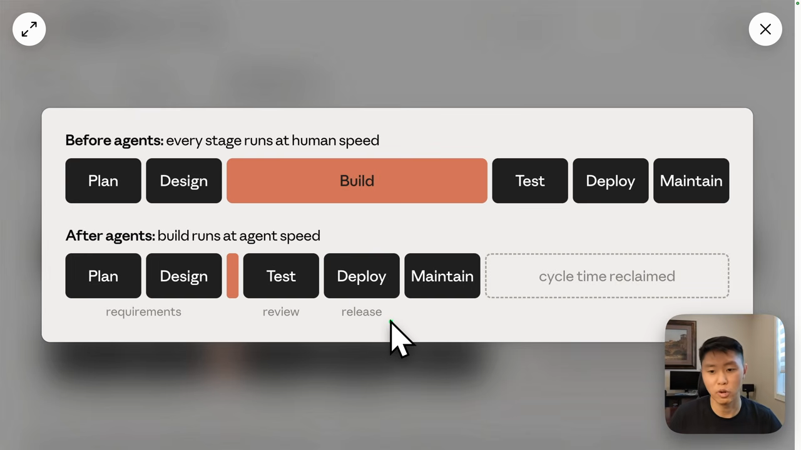
계획: 인터뷰로 모아 intent.md로 남겨요
전통적인 계획 단계는 이해관계자, 고객, PM과 회의하며 요구사항을 손으로 모으는 일이었어요. AI 네이티브 방식에서는 AI가 사람을 인터뷰해요. 발표자가 예로 든 건 Matt Pocock의 grill-me 스킬이에요. 계획의 모든 측면을 질문으로 파고들고, 결정 트리를 가지 하나씩 따라가며 사람과 에이전트가 같은 이해에 이를 때까지 묻는 스킬이에요.
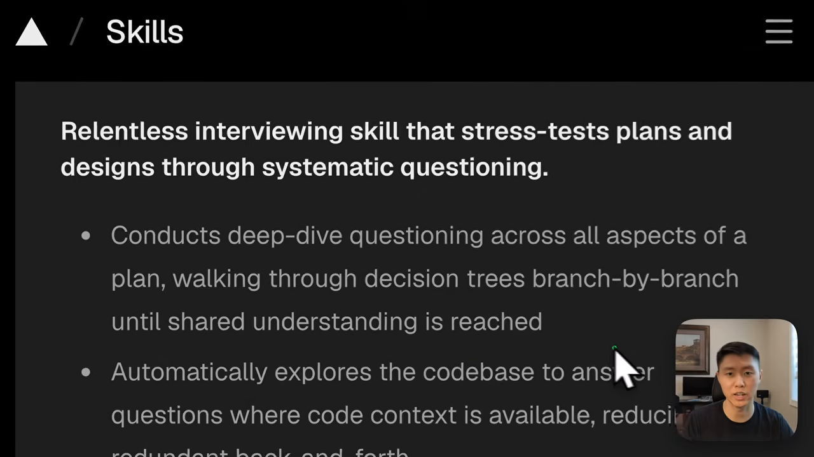
grill-me 스킬이에요. 코드베이스에서 답을 찾을 수 있는 질문은 스스로 탐색해 줄여 줘요. 영상 02:23에서 보기대화를 intent.md 한 장으로
그릴링 세션이 끝나면 대화, 결정, 맥락을 intent.md에 담아요. 사람이 읽을 수 있고, 기계가 바로 다음 단계에 쓸 수 있는 문서예요. 플레이북 표에서도 계획 단계의 변화를 이렇게 요약해요.
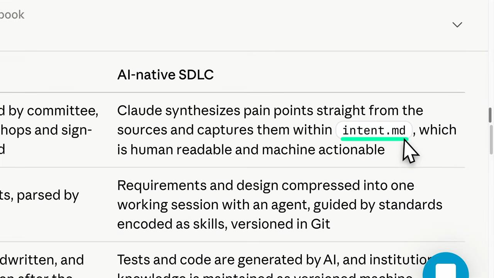
발표자가 따로 짚은 점이 두 가지 있어요.
- 변경 하나에 파일 하나예요. 프로젝트당 하나가 아니라
intent/폴더 안에 기능·버그마다 따로 둬요. - 저장소 밖에 둬도 돼요. Jira, GitHub Projects, Linear 같은 티켓 시스템에 넣어도 되는데, 원천은 한 곳만 정해야 해요.
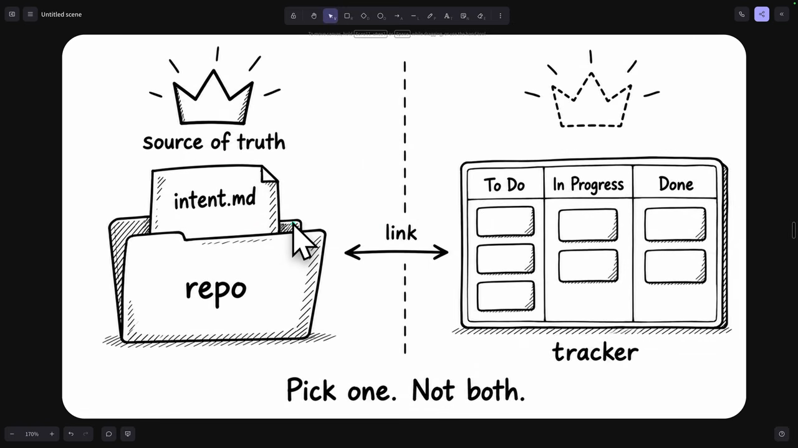
템플릿의 다섯 칸
플레이북의 intent 템플릿은 제목과 작성자 다음에 다섯 개의 제목을 고정된 순서로 둬요.
| 제목 | 담는 내용 | 예시(보험 청구 상태 조회) |
|---|---|---|
| Problem | 지금 무엇이 문제인지 | 고객이 청구 상태를 묻느라 콜센터에 전화해요 |
| Proposed outcome | 바뀐 뒤의 모습 | 포털에서 상태, 다음 단계, 예상 일자를 봐요 |
| Affected users and systems | 영향받는 사람과 시스템 | 청구 담당자, 포털 팀, claims-core API |
| Constraints | 지켜야 할 제약 | 포털 세션에 새 개인정보를 넣지 않아요 |
| Open questions | 아직 정하지 못한 것 | 외부 손해사정인도 접근해야 할까요? |
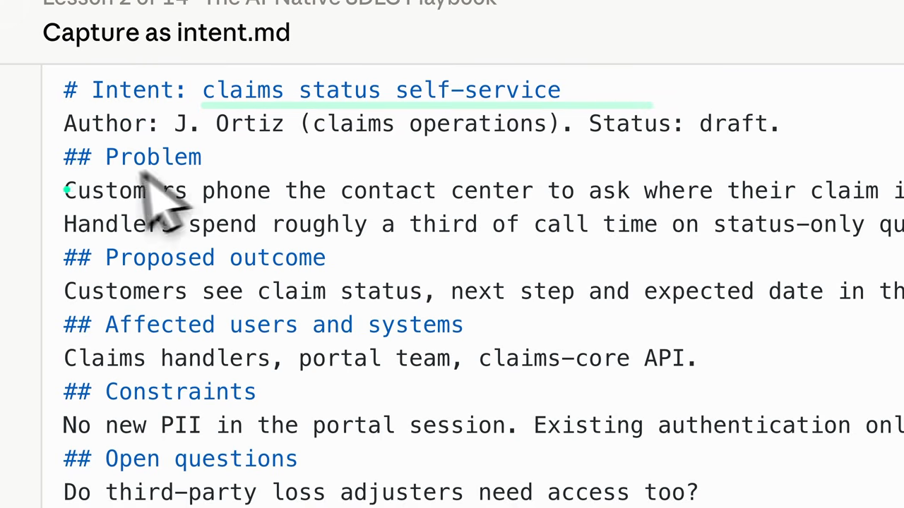
발표자는 이 템플릿을 프롬프트로 바꿔 두라고 해요. 저장 위치만 자기 환경(로컬 폴더나 Jira 같은 MCP 도구)에 맞게 고치면 돼요. 그릴링 세션 끝에 붙여 넣거나, 스킬·명령어로 만들어 세션 마지막에 실행하면 돼요. 프롬프트에는 '내가 말하지 않은 건 Open questions에 넣고 지어내지 말라'는 문장도 들어 있어요.
설계와 구현 계획: spec.md와 plan.md
intent.md가 생기면 문서 사슬이 시작돼요. 다음 단계는 intent를 받아 제대로 된 사양으로 바꾸는 설계예요.
intent.md와 spec.md는 뭐가 다를까요
| 문서 | 답하는 질문 | 담는 내용 |
|---|---|---|
intent.md | 왜 하나요 | 문제, 기대 결과, 영향 범위, 제약 |
spec.md | 무엇을 만드나요 | 기술 요구사항, 기대 동작 |
plan.md | 어떤 순서로 하나요 | 바뀌는 파일, 작업 순서, 위험, 완료 증거 |
플레이북은 intent를 spec으로 바꾸는 프롬프트를 줘요. 첨부한 intent.md를 읽고, 쓸 수 있는 스킬을 적용해 사내 브랜드 가이드라인·보안 정책·UX 기준에 맞는 사양을 쓰라는 내용이에요. 서로 충돌하는 정책이 있으면 그 부분을 분명히 적으라는 요구도 들어 있어요.
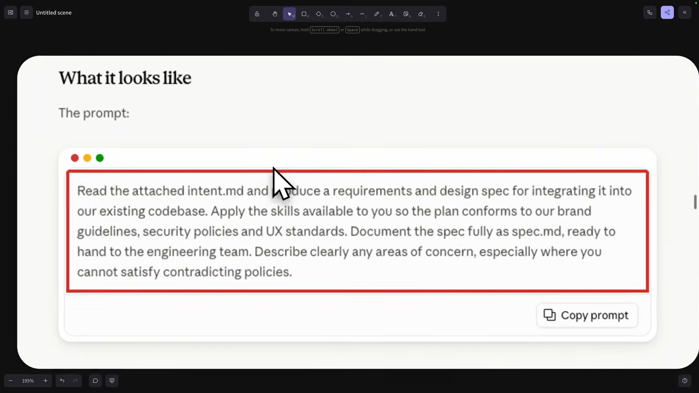
발표자는 이 프롬프트를 꼭 써야 하는 건 아니라고 해요. Matt Pocock 스킬이나 superpowers처럼 이미 쓰는 스킬, 조직의 템플릿으로 바꿔도 돼요.
plan.md: 에이전트가 따라 할 작업 목록
plan.md는 intent와 spec을 에이전트가 순서대로, 또는 병렬로 처리할 수 있는 작업으로 쪼개요. 플레이북 템플릿은 계획 제목, 바뀌는 파일, 작업 순서, 위험, 완료 증거로 이루어져요. 완료 증거는 예를 들어 '이 테스트 파일이 네 가지 상태를 모두 검사한다' 같은 문장이에요.
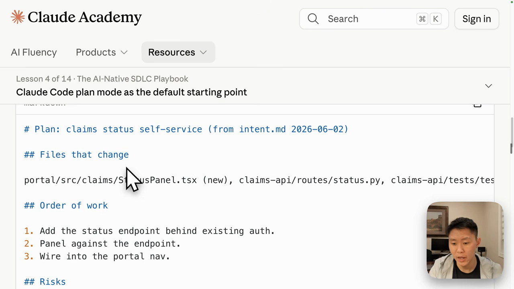
여기서도 정답은 하나가 아니에요. Matt Pocock의 to-tickets, superpowers의 writing-plans도 spec을 받아 계획으로 바꿔요. superpowers 계획은 목표, 아키텍처, 기술 스택, 전역 제약을 적고, 작업마다 바꿀 파일, 인터페이스, 체크박스 단계를 둬요. 이미 스펙 주도 개발 도구를 잘 쓰고 있다면 그대로 쓰고, 플레이북은 빠진 부분을 찾는 참고서로 쓰라는 게 발표자의 조언이에요.
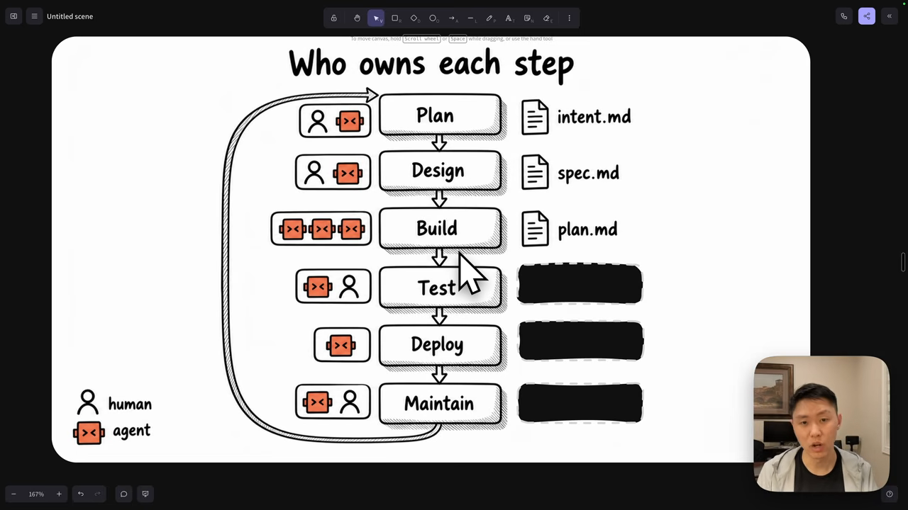
테스트: AI가 스스로 검증하는 루프
구현에 들어가기 전에 테스트부터 써요. 플레이북도 테스트 주도 개발, 즉 TDD를 권해요. 코드보다 검사를 먼저 만들어 두고, 테스트가 실패하는 동안 AI가 자기 코드를 고쳐 통과시키게 하는 피드백 루프예요.
Always give Claude a way to verify its own work, whether tests, a build, or a screenshot diff.
테스트든 빌드든 스크린샷 비교든, Claude가 자기 작업을 확인할 방법을 늘 쥐여 주라는 뜻이에요.
— 플레이북 레슨 8 (영상 09:19)
목표는 사람이 끼어들기 전에 자동화된 검사에 최대한 맡기는 거예요. 사람은 그 뒤에 변경을 확인해요.
'초록불'의 기준을 CLAUDE.md에 적어요
플레이북 예시는 CLAUDE.md에 검증 기준을 적어 둬요. 세 명령이 각각 어떤 출력으로 끝나야 하는지까지 정해 두는 게 요점이에요. 기대 출력이 없으면 에이전트가 무엇을 '통과'로 볼지 스스로 정해 버리기 때문이에요.
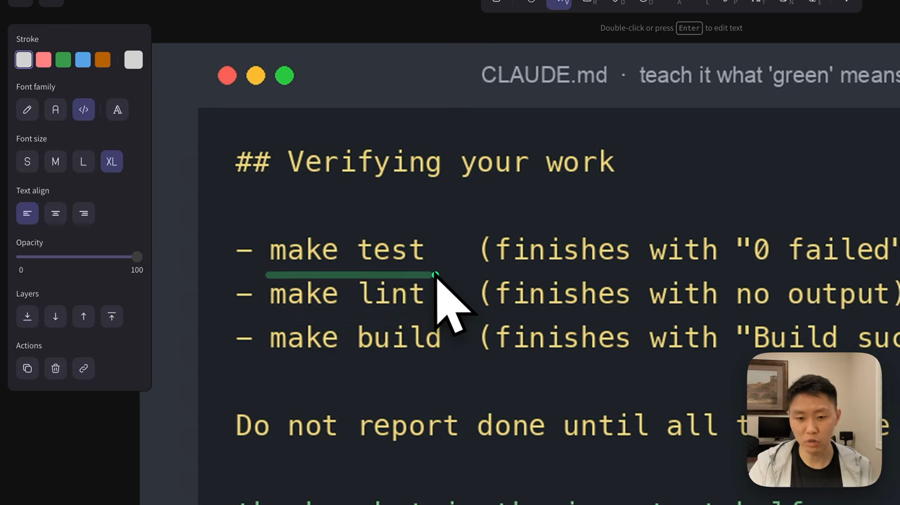
여기서 빌드는 코드를 새로 쓰는 일이 아니에요. 실제로 컴파일되고 실행되는지 확인하는 단계예요.
테스트 도구는 세 층으로
이 부분은 플레이북이 아니라 발표자가 덧붙인 정리예요.
| 층 | 도구 | 무엇을 검사하나요 |
|---|---|---|
| 함수 | Jest / Vitest | 계산, 엔드포인트 호출 같은 개별 함수 |
| UI 컴포넌트 | React Testing Library | 버튼, 폼처럼 사용자가 보고 만지는 요소 |
| 전체 화면 | Cypress / Playwright | 여러 페이지를 오가는 사용자 흐름 전체 |
컴포넌트 하나는 여러 함수를 부르지만, 함수가 컴포넌트를 부르지는 않아요. 그래서 아래층인 함수 테스트부터 채우고 컴포넌트 테스트, 마지막으로 E2E 테스트 순으로 올라가요.
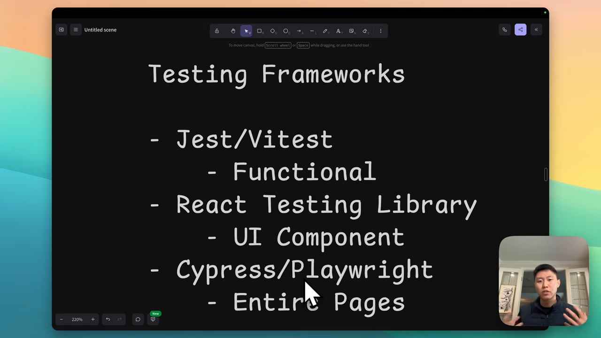
지속 평가: 이미 푼 작업으로 퇴보를 잡아요
테스트 다음은 CI 안의 지속 평가예요. 모델을 바꾸면 새 모델이 전에는 잘 되던 일을 놓칠 수 있어요. 그래서 지금 무엇이 되는지를 미리 기록해 두고, 바꿀 때마다 다시 확인해요.
eval은 이미 풀어 본 작업이에요
플레이북은 Claude가 이미 끝낸 실제 작업 20~50개를 모아 eval로 쓰라고 해요. PR이나 추적하던 GitHub 이슈가 재료가 돼요. eval 하나는 프롬프트와, 받아들일 수 있는 결과를 판정하는 검사의 짝이에요. 테스트 통과, 깨끗한 린트, 동작 변화 없음 같은 기준이에요.
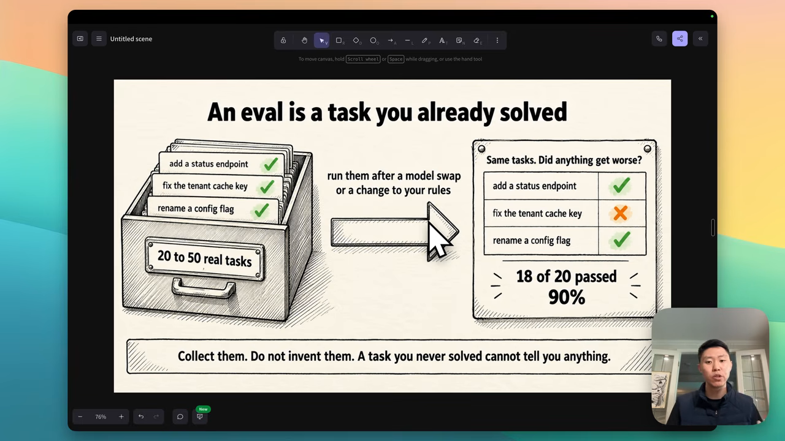
발표자는 Claude의 skill-creator 스킬로 eval을 꾸리는 방법도 말해요. 앞에서 쓴 TDD 스킬 같은 스킬이 새 모델에서도 같은 일을 해내는지 확인하는 거예요.
CI에서 정기적으로 돌려요
예시는 .github/workflows/agent-evals.yml이에요. CLAUDE.md나 .claude/ 아래 파일이 바뀌는 PR, 그리고 매일 새벽 정해진 시각에 실행돼요. eval 파일마다 Claude Code를 헤드리스로 실행하고, 쓸 수 있는 도구를 Read, Edit, make test로 묶어 둔 채 결과를 검사 스크립트에 넘겨요.
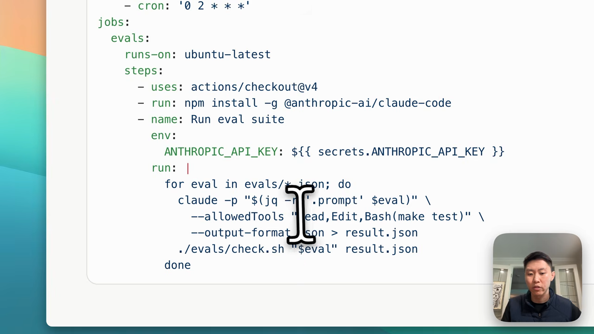
PR 리뷰와 hooks
eval까지 갖췄다면 다음은 AI가 PR을 리뷰하게 하는 단계예요. 발표자가 꼽은 핵심은 리뷰 기준을 REVIEW.md 한 장에 적어 두는 거예요.
REVIEW.md에 들어가는 것
- 세 번 돌려요. 버그(로직 오류, 경계 조건), 보안(인젝션, 인증 빈틈, 로그 속 개인정보), 컴플라이언스(spec.md·plan.md·설계 원칙을 지키는지)로 나눠 보고 발견마다 태그를 달아요.
- 'Important'의 기준을 정해요. 동작을 깨뜨리거나 데이터를 흘리거나 정책을 어기는 것만 그렇게 불러요. 스타일과 이름 짓기는 nit이에요.
- nit은 리뷰당 다섯 개까지 적고, 나머지는 개수만 요약해요.
- 보고하지 않을 것도 적어요.
src/gen/아래 생성 파일, CI가 이미 강제하는 것들이에요.
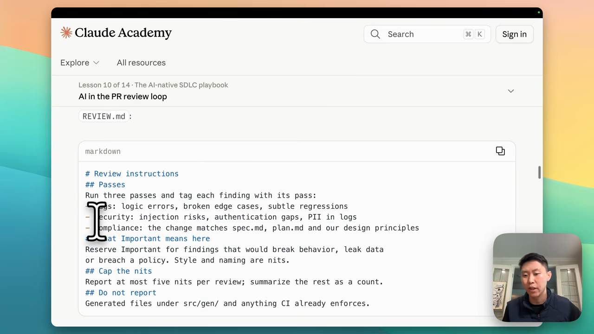
발표자의 팁도 하나 있어요. 지난 PR에 사람이 단 코멘트를 AI에게 읽히고, 자주 반복되는 지적을 찾아 REVIEW.md에 더하라는 거예요. 그러면 다음 PR부터 AI가 같은 기준으로 코멘트를 달아요.
리뷰만으로는 부족해서 hooks를 둬요
리뷰가 있어도 AI가 위험한 행동을 할 수 있어요. 프로덕션 DB를 건드리거나, PR을 머지하거나, 인증 정보를 코드에 쓰거나, 손대면 안 되는 파일을 고치는 일이에요. hooks로 이런 행동을 막아 버그나 민감한 데이터가 프로덕션에 가지 않게 해요.
막는 것만 하는 건 아니에요. 리뷰어 에이전트가 코멘트를 보내 빌더 에이전트가 고칠 때, 린터가 자동으로 돌아 포맷과 테스트를 확인하게 할 수도 있어요.
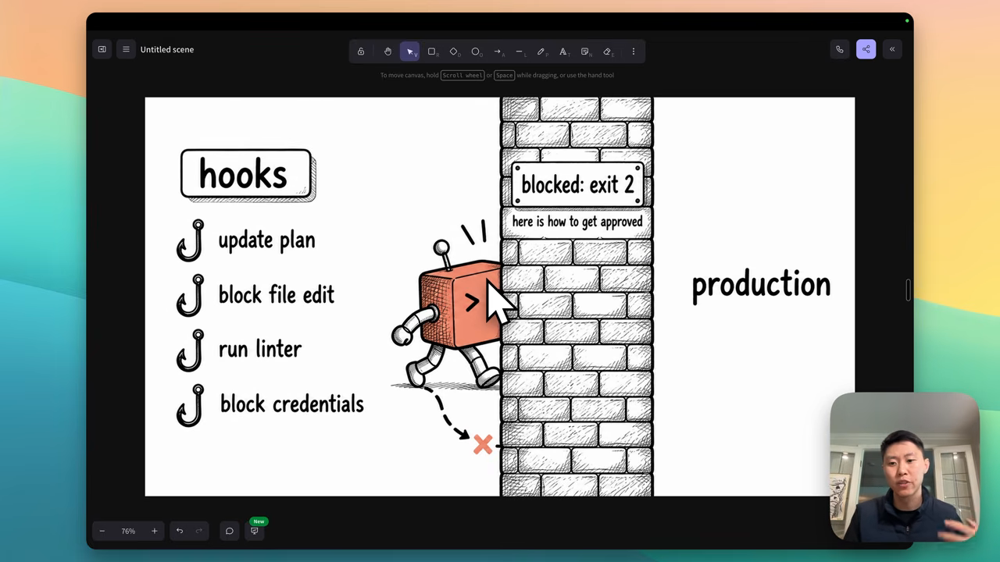
배포와 유지보수: 지표로 루프를 닫아요
PR이 리뷰를 거쳐 머지되면 남은 건 배포예요. 발표자는 배포 전과 배포 후로 나눠 설명해요.
| 시점 | 계기 | Claude가 하는 일 |
|---|---|---|
| 배포 전 | 빌드 실패 | 워크플로가 Claude를 헤드리스로 불러요. 빌드 로그를 읽고 원인을 찾아 PR을 올리면, 그 PR은 앞의 리뷰 과정을 그대로 거쳐요 |
| 배포 후 | 릴리스 직후 | 상태 확인 도구(Datadog, Sentry 등)로 뭔가 크게 깨졌는지 봐요 |
| 배포 후 | 장애 발견 | 롤백 도구로 이전 버전으로 되돌리고, 원인을 찾아 새 PR을 만들어 배포 과정을 다시 밟아요 |
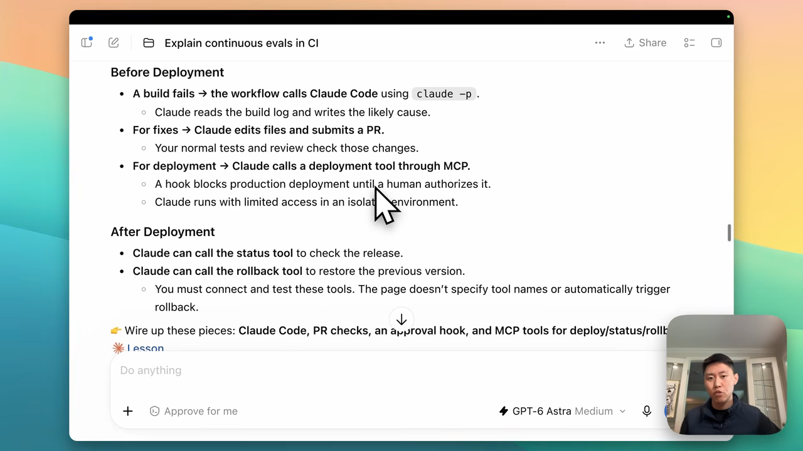
지표로 루프를 닫아요
마지막 단계는 유지보수예요. 플레이북의 마지막 레슨 이름이 '지표로 루프 닫기'예요. Datadog이나 Sentry 같은 성능 추적 도구의 지표를 Claude가 주기적으로 봐요. 반복되는 오류, 점점 느려지는 쿼리, 사용자 이탈 같은 문제를 찾는 거예요.
찾은 문제는 새 intent.md가 돼요. 그리고 계획부터 다시 같은 주기를 밟아요. 발표자는 이렇게 하면 SDLC의 모든 단계를 AI로 자동화할 수 있다고 정리해요.